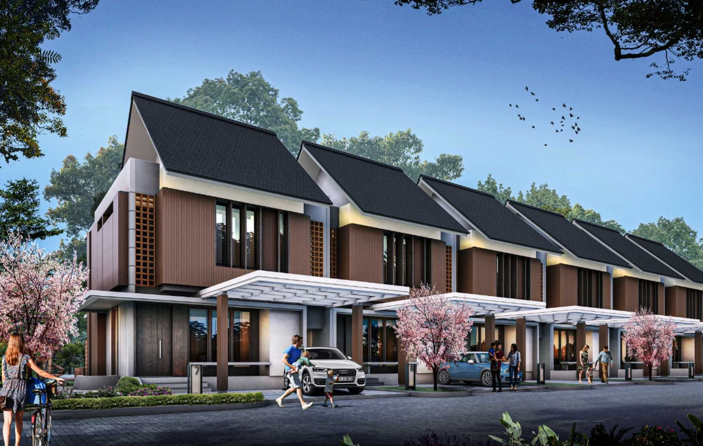

26 Unit
Subsidi tercatat
Giran Residence Holtekamp tercatat di SiKumbang berlokasi di Holtekamp, Distrik Muara Tami, Kota Jayapura. Unit yang tercantum adalah Tipe 36 di atas lahan 90 m² dengan harga listing Rp240 juta.

Visual UnitSubsidi tercatat
Terjual tercatat
Harga listing
Bangunan / lahan m²
Listing publik yang diperiksa mencantumkan satu tipe rumah subsidi Tipe 36/90. Tiga kartu di bawah menampilkan opsi unit dengan spesifikasi dan harga yang sama, tanpa membuat tipe atau harga baru yang tidak tercantum pada sumber.
Sumber utama: SiKumbang Kementerian PKP, ID Lokasi JAP0420062025T003. Harga dan status penjualan dapat berubah setelah pembaruan data oleh pengembang.
Seluruh informasi pada bagian ini menggunakan data Tipe 36/90 dan spesifikasi teknis yang tercantum pada SiKumbang.
Komposisi ruang tidur yang tercantum untuk Tipe 36.
Fasilitas kamar mandi sesuai data unit yang tercantum.
Luas lahan unit Tipe 36/90 pada listing resmi.
Luas bangunan yang tercantum untuk rumah subsidi ini.
Lantai cor beton dengan keramik 40 × 40 cm.
Rangka kayu dengan penutup atap seng spandek.
SiKumbang mencantumkan Giran Residence Holtekamp di Holtekamp, Distrik Muara Tami, Kota Jayapura, Papua, dengan titik peta sekitar -2.6628278, 140.7736531.
Kelurahan/KampungHoltekamp
DistrikMuara Tami
KotaKota Jayapura, Papua
Kantor PemasaranJalan Hanurata – Holtekamp, Perum Giran Residence Holtekamp No. 1
Koordinat di atas berasal dari tautan peta pada listing SiKumbang Giran Residence Holtekamp.
Website hanya menampilkan informasi yang tersedia pada listing publik SiKumbang. Dokumen yang tidak dicantumkan pada halaman publik tidak diisi dengan asumsi.
Hubungi Kantor PemasaranUntuk sertifikat, PBG, notaris/PPAT, dan dokumen transaksi, verifikasi langsung kepada pengembang sebelum mengambil keputusan pembelian.
SiKumbang mencantumkan harga, kategori rumah, serta status unit. Detail DP, bank penyalur, bunga, tenor, dan simulasi KPR tidak ditampilkan pada halaman publik yang diperiksa.
Harga rumah Tipe 36 / 90 yang tercantum pada listing SiKumbang.
Lihat SumberKategori yang tercantum untuk Tipe 36 pada Giran Residence Holtekamp.
Tanya MarketingStatus unit subsidi sebagaimana tercantum pada SiKumbang saat audit dilakukan.
Konfirmasi Status TerkiniFoto di bawah diambil dari galeri publik SiKumbang untuk Giran Residence Holtekamp, bukan ilustrasi AI atau render buatan website.
Sumber foto: halaman publik SiKumbang Giran Residence Holtekamp.
SiKumbang mencantumkan nomor telepon dan email kantor pemasaran. Tombol pesan WhatsApp menggunakan nomor telepon pemasaran yang sama; ketersediaan kanal WhatsApp pada nomor tersebut tetap perlu dikonfirmasi kepada pengembang.
26 unit subsidi • 2 terjualKonfirmasi status terbaru langsung kepada kantor pemasaran.
Data proyek, harga, status unit, alamat pemasaran, developer, spesifikasi, koordinat, dan foto pada halaman ini mengacu pada listing publik SiKumbang untuk Giran Residence Holtekamp (ID JAP0420062025T003) yang diperiksa pada 7 Oktober 2026. Informasi dapat berubah setelah pembaruan oleh pengembang. Sertifikat, PBG, bank penyalur, DP, bunga, dan tenor tidak dicantumkan pada halaman publik yang diperiksa. Kolom WhatsApp juga tidak dicantumkan; tombol WhatsApp pada website menggunakan nomor telepon pemasaran yang tercantum dan kanal WhatsApp pada nomor tersebut tetap perlu dikonfirmasi. Buka sumber SiKumbang.